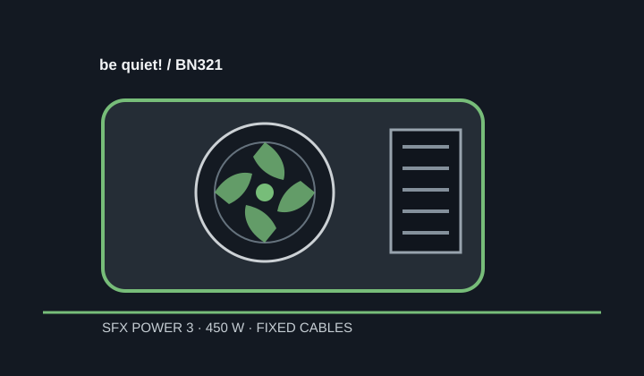

[ POWER CONVERSION // IDENTIFIED MODEL ]
be quiet! SFX Power 3 450W (BN321)
Model SFX Power 3 450W, manufacturer number BN321. This is distinct from the SFX Power 3 300 W and the cataloged SFX-L 600 W unit.

HIGH-VOLTAGE SAFETY: This assembly is not user-serviceable. Never open or probe it.
Verified model specifications
| Model / rated output | be quiet! SFX Power 3 450W, BN321; continuous total output 450 W. |
|---|---|
| Form factor / dimensions | SFX; 100 × 125 × 63.5 mm (length × width × height). |
| DC output rails | +3.3 V: 16 A; +5 V: 16 A; combined +3.3 V/+5 V: 85 W; +12 V: 37.5 A / 450 W; −12 V: 0.3 A; +5 VSB: 2.5 A. |
| Efficiency claim | Not stated here; no model-specific efficiency certification is claimed. |
| Cable-end connector counts | Fixed cables: ATX 20+4-pin ×1; CPU P8 ×1; PCIe 6+2-pin ×2; SATA ×3; PATA/Molex ×2; floppy ×1. The referenced 450 W sheet identifies a single P8 CPU lead, not a detachable 4+4-pin. |
| Revision and cable cautions | Identify BN321 / 450 W specifically; the family also includes a different 300 W model and the separate SFX-L 600 W product. Fixed harnesses have no detachable PSU-side modular cables; do not cut, splice or adapt wires. |
Compatibility & safe installation
- Use only where the chassis accepts the 100 mm SFX body and its fixed cable lengths/connectors reach without tension.
- Compare the motherboard CPU power socket with the single fixed P8 cable and confirm GPU power connectors and total/rail demand before use.
- Do not confuse this model with 300 W SFX Power 3 or with the SFX-L 600 W cable and rating set.
- Never open the PSU or use it if damaged, wet, modified or unidentified.
Manufacturer sources
- be quiet! SFX Power 3 product pageManufacturer identity and model-family reference.
- be quiet! SFX Power 3 datasheetManufacturer ratings, dimensions, rails and cable connector details, including the 450 W variant.
- be quiet! SFX Power 3 manualManufacturer installation and safety information.